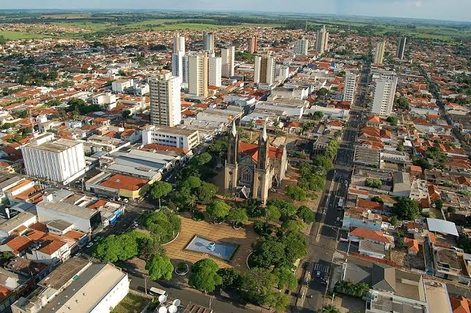
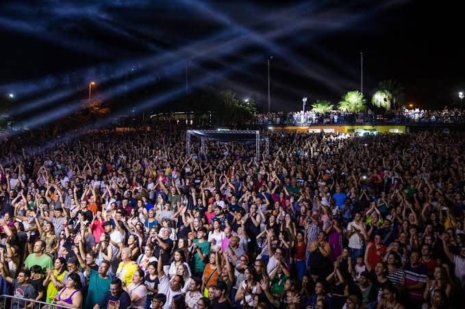
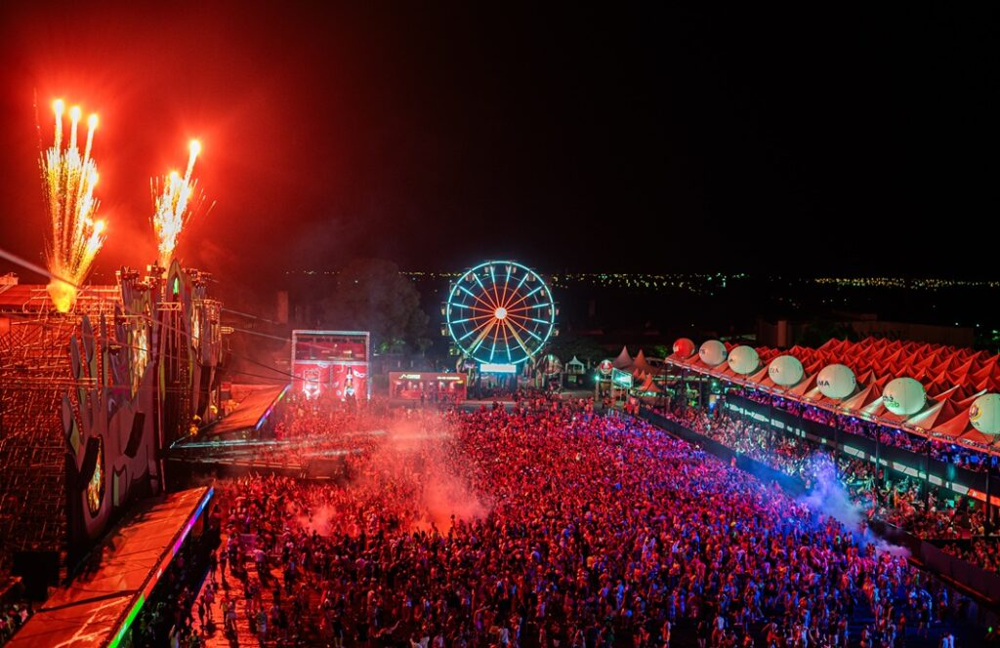
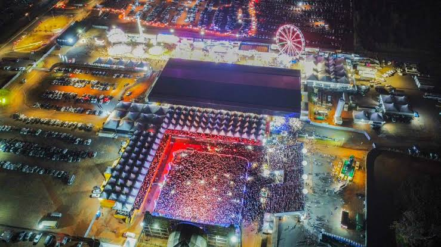
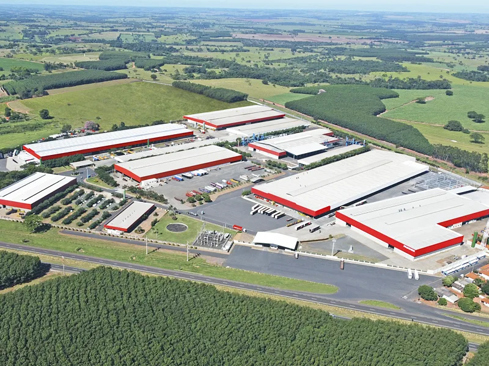
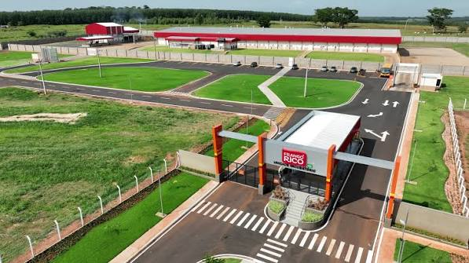
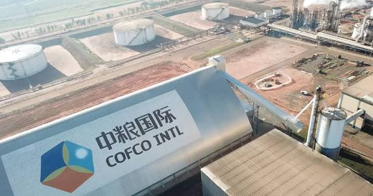

Sobre Votuporanga
Votuporanga é uma cidade do interior de São Paulo que, apesar de não ser uma das maiores cidades do estado, tem bastante coisa acontecendo. É uma cidade que mistura indústria, comércio, cultura, eventos e aquele jeito de cidade do interior onde muita coisa acaba girando em torno das pessoas e dos lugares que fazem parte da história local.
O próprio nome Votuporanga vem do tupi e é associado à ideia de "bons ares", "bons ventos" ou "brisas suaves". A cidade começou a ser formada na década de 1930 e foi oficialmente inaugurada em 8 de agosto de 1937.

Um pouco da história
A história de Votuporanga está ligada ao desenvolvimento do interior paulista e, principalmente, ao ciclo do café. Com o passar dos anos, a chegada da ferrovia em 1945 ajudou a cidade a crescer, facilitando o transporte de produtos agrícolas e impulsionando o comércio e a economia local.
FLIV - Festival Literário de Votuporanga
Um dos eventos que mais representa o lado cultural da cidade é o FLIV, Festival Literário de Votuporanga. O festival reúne literatura, música, teatro, cinema, oficinas, contação de histórias e diversas outras atividades gratuitas.
O evento cresceu bastante ao longo dos anos e se tornou uma das principais celebrações culturais da cidade.


OBA Festival
Quando o assunto é Carnaval, provavelmente o evento mais conhecido de Votuporanga é o OBA Festival. O festival nasceu na cidade e, depois de alguns anos sendo realizado em São José do Rio Preto, retornou para Votuporanga em 2026.
A volta do OBA marcou um momento importante para a cidade, trazendo novamente uma grande festa de Carnaval e movimentando o turismo, o comércio e a vida noturna local.

Votu International Rodeo
Outro evento que vem ganhando bastante espaço é o Votu International Rodeo. A primeira edição realizada em 2025 reuniu mais de 80 mil pessoas durante quatro dias de programação, com shows, competições de montaria e uma grande estrutura no Centro de Eventos Helder Henrique Galera.
Além de ser uma opção de entretenimento, o rodeio também movimenta bastante a economia da cidade.

Economia e indústria
Votuporanga também possui uma forte atividade industrial e comercial. Historicamente, a agricultura teve um papel importante no desenvolvimento do município, mas, com o passar dos anos, a cidade também passou a se destacar pela indústria, pelo comércio e pelos serviços.
Entre as empresas que fazem parte da economia da cidade está a Facchini, conhecida pela fabricação de implementos rodoviários.

A Frango Rico também faz parte da atividade industrial de Votuporanga, atuando no setor alimentício.

A cidade também conta com a presença da COFCO, ligada à atividade agroindustrial e à movimentação de produtos agrícolas na região.

Localização
Veja no mapa onde Votuporanga está localizada: